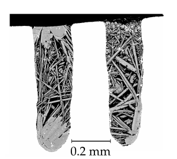

Dr Bob Myhill
UKSA Aurora Postdoctoral Fellow
University of Bristol
Planetary scientist. Seismologist. High pressure experimental petrologist.
Planetary scientist. Seismologist. High pressure experimental petrologist.
I am a UK Space Agency Aurora Research Fellow working in the School of Earth Sciences at the University of Bristol. In my research, I seek to understand the physical and chemical processes which govern the evolution of our planet. Many of these processes operate on length-scales of kilometers to hundreds of kilometers, but are underlain by physics at an atomic-scale. As a result, my research spans a number of fields, including seismology, experimental petrology and mineral physics.
I am indebted to the many brilliant scientists with whom I collaborate and discuss ideas. Naming everyone would take many pages, but I am particularly grateful for the opportunity to work with Nick Teanby and James Wookey (Bristol); Dan McKenzie, Keith Priestley and Sanne Cottaar (University of Cambridge); Linda Warren (St Louis University); Dan Frost, Dave Rubie, Catherine McCammon and Katherina Marquardt (BGI, Bayreuth); Christopher Beyer (Bochum); and Juliane Dannberg and René Gaßmöller (Davis, CA).
I am currently working on projects funded by the UK Space Agency (UK), the ERC (Europe), NASA (USA), NSF (USA) and the NSFC (China). Details of these projects can be found below.
I have worked on a variety of projects related to deep planetary interiors. Here are a few of my past and ongoing projects.
I am currently one of the Science Team working on the InSight Mission, which will deploy two seismometers on Mars in November this year. My work for the mission is split into two parts: understanding the site and instrument response of the seismometer (1, 2) and using thermodynamics to understand how seismic observations can tell us about the chemical evolution of the planet, and especially the interactions between the core and the mantle.
The official project site
An artist's illustration of the InSight Lander after deployment of the seismometers and heat flow probe on the surface of Mars
Volcanoes are the most obvious expression of melting of the Earth, but we have evidence from diamonds that the Earth can melt to at least 700 km depth. I have conducted high pressure experiments to understand the compositions and properties of water-bearing phases and water-rich melts at 410 and 670 km depth (1, 2, 3), where seismic observations indicate the presence of melt. In a separate study, James Drewitt (Bristol) and I are running ab-initio experiments to better understand the thermodynamics of these melts.
Multi-anvil experimental charges run at 13 GPa and 1400°C in the forsterite-water system (Myhill et al., 2017)
I use information from deep earthquakes to better understand the kinematics and dynamics of subducting slabs. In a series of studies, I showed that deep seismic activity illuminates parts of subducting slabs which are buckling or shearing at the base of the upper mantle (1, 2). Working with Haijiang Zhang at UTSC (China), we are combining these insights with double-difference seismic tomography to resolve long-standing arguments about how slabs drive and are driven by large scale mantle dynamics.

Fault-plane orientations determined by directivity observations in the Izu-Bonin subduction zone (Myhill and Warren, 2012)
Much of my research requires novel uses of thermodynamic calculations and geophysical/geodynamic simulations, which are often not implemented in existing open-source tools. To rectify this problem, I contribute to several pieces of open-source software, three of which are listed below.
Maintainer
A thermodynamic and geophysics toolkit for the Earth and planetary sciences
Source code available on Github
Contributor
Geodynamics code to model deformation and convection in planetary interiors
Source code available on GithubContributor
A web-based portal for computational thermodynamics and fluid dynamics
YouTube tutorialsYou can find my recent publications on Google Scholar or OrcID.
Dr Robert Myhill
School of Earth Sciences
University of Bristol
Wills Memorial Building
Queens Road
Bristol BS8 1RJ
United Kingdom